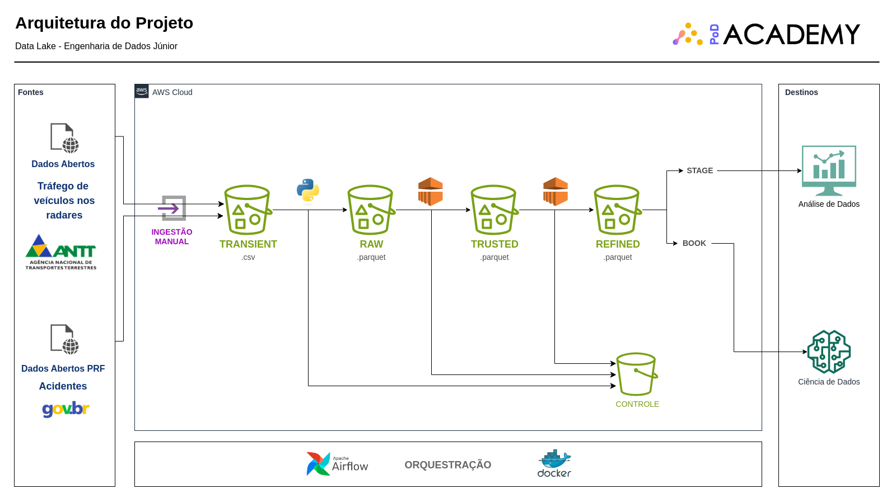

Data Lake AWS
This project proposes the construction of a Data Lake on AWS and was developed as part of the prerequisite for completing the Data Engineering from Zero to Junior course at PoD Academy.
The architecture of the project is illustrated below:

The details of the project development are documented in the following article on Medium:
Medium Article
And the project codes can be accessed in the following repository:
GitHub Repository